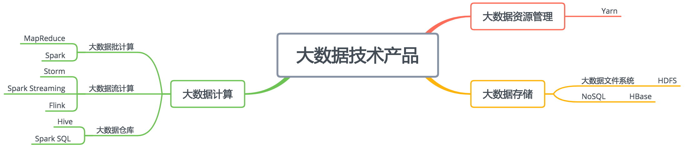
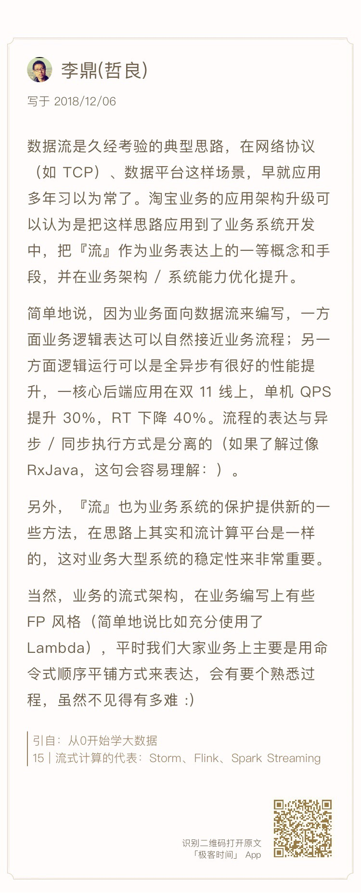

- 00 开篇词 为什么说每个软件工程师都应该懂大数据技术？.md.html
- 01 大数据技术发展史：大数据的前世今生.md.html
- 02 大数据应用发展史：从搜索引擎到人工智能.md.html
- 03 大数据应用领域：数据驱动一切.md.html
- 04 移动计算比移动数据更划算.md.html
- 05 从RAID看垂直伸缩到水平伸缩的演化.md.html
- 06 新技术层出不穷，HDFS依然是存储的王者.md.html
- 07 为什么说MapReduce既是编程模型又是计算框架？.md.html
- 08 MapReduce如何让数据完成一次旅行？.md.html
- 09 为什么我们管Yarn叫作资源调度框架？.md.html
- 10 模块答疑：我们能从Hadoop学到什么？.md.html
- 11 Hive是如何让MapReduce实现SQL操作的？.md.html
- 12 我们并没有觉得MapReduce速度慢，直到Spark出现.md.html
- 13 同样的本质，为何Spark可以更高效？.md.html
- 14 BigTable的开源实现：HBase.md.html
- 15 流式计算的代表：Storm、Flink、Spark Streaming.md.html
- 16 ZooKeeper是如何保证数据一致性的？.md.html
- 17 模块答疑：这么多技术，到底都能用在什么场景里？.md.html
- 18 如何自己开发一个大数据SQL引擎？.md.html
- 19 Spark的性能优化案例分析（上）.md.html
- 20 Spark的性能优化案例分析（下）.md.html
- 21 从阿里内部产品看海量数据处理系统的设计（上）：Doris的立项.md.html
- 22 从阿里内部产品看海量数据处理系统的设计（下）：架构与创新.md.html
- 23 大数据基准测试可以带来什么好处？.md.html
- 24 从大数据性能测试工具Dew看如何快速开发大数据系统.md.html
- 25 模块答疑：我能从大厂的大数据开发实践中学到什么？.md.html
- 26 互联网产品 + 大数据产品 = 大数据平台.md.html
- 27 大数据从哪里来？.md.html
- 28 知名大厂如何搭建大数据平台？.md.html
- 29 盘点可供中小企业参考的商业大数据平台.md.html
- 30 当大数据遇上物联网.md.html
- 31 模块答疑：为什么大数据平台至关重要？.md.html
- 32 互联网运营数据指标与可视化监控.md.html
- 33 一个电商网站订单下降的数据分析案例.md.html
- 34 A_B测试与灰度发布必知必会.md.html
- 35 如何利用大数据成为“增长黑客”？.md.html
- 36 模块答疑：为什么说数据驱动运营？.md.html
- 37 如何对数据进行分类和预测？.md.html
- 38 如何发掘数据之间的关系？.md.html
- 39 如何预测用户的喜好？.md.html
- 40 机器学习的数学原理是什么？.md.html
- 41 从感知机到神经网络算法.md.html
- 42 模块答疑：软件工程师如何进入人工智能领域？.md.html
- 所有的不确定都是机会——智慧写给你的新年寄语.md.html
- 第2季回归丨大数据之后，让我们回归后端.md.html
- 结束语 未来的你，有无限可能.md.html
- 捐赠
17 模块答疑：这么多技术，到底都能用在什么场景里？
你好，我是李智慧。
经过前面两个模块，我们学习了大数据最经典、最主流的一些技术和产品，今天我们再回过头来梳理一下这些技术和产品。

从上面这张图来看大数据技术的分类，我们可以分为存储、计算、资源管理三大类。
最基本的存储技术是HDFS。比如在企业应用中，会把通过各种渠道得到的数据，比如关系数据库的数据、日志数据、应用程序埋点采集的数据、爬虫从外部获取的数据，统统存储到HDFS上，供后续的统一使用。
HBase作为NoSQL类非关系数据库的代表性产品，从分类上可以划分到存储类别，它的底层存储也用到了HDFS。HBase的主要用途是在某些场景下，代替MySQL之类的关系数据库的数据存储访问，利用自己可伸缩的特性，存储比MySQL多得多的数据量。比如滴滴的司机每隔几秒就会将当前的GPS数据上传，而滴滴上的司机数量号称有上千万，每天会产生数百亿的GPS数据，滴滴选择将这样海量的数据存储在HBase中，当订单行程结束的时候，会从HBase读取订单行程期间的GPS轨迹数据，计算路程和车费。
大数据计算框架最早是MapReduce，目前看来，用的最多的是Spark。但从应用角度讲，我们直接编写MapReduce或者Spark程序的机会并不多，通常我们会用Hive或者Spark SQL这样的大数据仓库工具进行大数据分析和计算。
MapReduce、Spark、Hive、Spark SQL这些技术主要用来解决离线大数据的计算，也就是针对历史数据进行计算分析，比如针对一天的历史数据计算，一天的数据是一批数据，所以也叫批处理计算。而Storm、Spark Streaming、Flink这类的大数据技术是针对实时的数据进行计算，比如摄像头实时采集的数据、实时的订单数据等，数据实时流动进来，所以也叫流处理大数据技术。
不管是批处理计算还是流处理计算，都需要庞大的计算资源，需要将计算任务分布到一个大规模的服务器集群上。那么如何管理这些服务器集群的计算资源，如何对一个计算请求进行资源分配，这就是大数据集群资源管理框架Yarn的主要作用。各种大数据计算引擎，不管是批处理还是流处理，都可以通过Yarn进行资源分配，运行在一个集群中。
所以上面所有这些技术在实际部署的时候，通常会部署在同一个集群中，也就是说，在由很多台服务器组成的服务器集群中，某台服务器可能运行着HDFS的DataNode进程，负责HDFS的数据存储；同时也运行着Yarn的NodeManager，负责计算资源的调度管理；而MapReduce、Spark、Storm、Flink这些批处理或者流处理大数据计算引擎则通过Yarn的调度，运行在NodeManager的容器（container）里面。至于Hive、Spark SQL这些运行在MapReduce或者Spark基础上的大数据仓库引擎，在经过自身的执行引擎将SQL语句解析成MapReduce或者Spark的执行计划以后，一样提交给Yarn去调度执行。
这里相对比较特殊的是HBase，作为一个NoSQL存储系统，HBase的应用场景是满足在线业务数据存储访问需求，通常是OLTP（在线事务处理）系统的一部分，为了保证在线业务的高可用性和资源独占性，一般是独立部署自己的集群，和前面的Hadoop大数据集群分离部署。
今天我帮你把专栏前面讲过的大数据技术串联起来，并放到了比较具体的应用场景中，后面在专栏模块四，我们还会讨论如何将这些技术产品集成为一个大数据平台，希望能帮你更进一步了解大数据技术的应用方法和使用场景，请你一定坚持把专栏学完。
在专栏文章里，“蜗牛”同学问了我这样一个问题，我回顾了下自己的过往，也想和更多同学分享一下我的人生观。
我在评论回复里，讲到王小波的《我的精神家园》。读这本书，大概是在我大学快毕业的时候，当时面临种种困惑，努力思考自己这一生应该如何度过，自己应该做一个什么样的人。
当时我就读于一所不入流的大学，在大学里面我又是个不入流的学生，从当时的趋势看，我未来的人生大概率也是不入流的人生，浑浑噩噩、蝇营狗苟度过一生。
虽然有的时候踌躇满志，也想要改变自己，将来有一天能出人头地。但是更多的时候想想自己的天分、背景，就不由得万念俱灰。进一步想，如果自己注定要平庸一生，活着又有什么意义。现在想来，当时可能是有一点抑郁的。
也就在那个时候读到了王小波的杂文集，关于人应该如何度过自己的一生，有了不一样的理解。王小波说：“我活在世上，无非想要明白些道理，遇见些有趣的人，做一些有趣的事。倘能如我所愿，我的一生就算成功。”
王小波的书当时给了我一种全新的认知世界的视角，我不一定要出人头地才叫成功，我能把自己的一生过得有趣、好玩，我也就算没白活一生。
但是如果简单的把好玩、有趣理解成自得其乐、不思进取，这样的生活肯定是有问题的。看王小波的其他文章就会明白，这个好玩、有趣也不是一件容易的事，没有一定的知识、见识，没有有深度的思考，没有经历过足够的困难、挫折，就根本不能理解哪些是真正好玩、有趣的人和事。
所以你必须还是要努力拼搏、锐意进取，然后在这个过程中才能真正明白一些道理，并且会遇到一些有趣的人。“我只愿蓬勃生活在此时此刻，无所谓去哪，无所谓见谁。那些我将要去的地方，都是我从未谋面的故乡。以前是以前，现在是现在。我不能选择怎么生，怎么死；但我能决定怎么爱，怎么活。”
想通了这一点后，我就不再纠结自己是不是足够的优秀，能够成就什么样的事业。我只要每天都有一点点进步，明白一点点道理，生活就是值得的。所以毕业以后我觉得编程好玩，就去自学编程；觉得自己学得差不多了，就去找了一份程序员的工作；觉得缺乏创造、不断重复的程序员工作并不好玩，就去考计算机专业的研究生；后来又去北京、杭州、上海不同的城市生活；去阿里巴巴、Intel、创业公司等不同的公司去工作；期间遇到过很多有趣的人，跟很多聪明的人合作，明白了一些道理，也做过一些有趣的事。
再说几本对我影响比较大的技术书籍。我大学读的不是计算机专业，后来偶尔在图书馆里看到一本C语言编程的书，讲图形编程和游戏编程的，当时觉得特别好玩，就开始自学编程。但是后来做了程序员以后，却发现天天按着需求写代码特别无聊，既没有挑战也没有创新，偶然看了一本名为《Effective Java》的书，发现这些常规的程序也有很多有意思的写法。
这本书讲了很多有趣的编程技巧，当时我在北京的中关村上班，每天上下班的地铁上，刚好可以看完一个技巧，很多技巧可以直接用在工作中，特别好玩。同时我也意识到，很多时候不是事情本身无趣，而是做事情的方式无趣。循规蹈矩、反复重复可以把事情做完，但是这样就会很无聊，如果去寻找更巧妙的解决之道，事情就变得有趣多了。
后来我就想，能不能把这些技巧提炼出来，让大家一起用，所以在看到《敏捷软件开发：原则、模式与实践》这本书的时候，我非常激动。在读这本书之前，我也看过设计模式的书，不过感觉这些书都把设计模式当做编程技巧来讲，虽然也有意思，但是技巧嘛，看得多了也就那么回事。
但是《敏捷软件开发》这本书把设计模式上升到设计思想的高度，书中说“软件设计不应该是面向需求设计，而应该是面向需求变更设计”，也就是说在设计的时候，主要要考虑的是当需求变更的时候，如何用最小的代价实现变更。优秀的工程师不应该害怕需求变更，而应该欢迎需求变革，因为优秀的工程师已经为需求变更做好了设计，如果没有需求变更，那就显示不出自己和只会重复的平庸工程师的区别。这就非常有意思了不是吗。
因为比较关注设计，并且后来又做了一些架构设计、框架和工具开发的工作，也因此我看到《企业应用架构模式》这本书的时候特别震撼。当时自己觉得能够做框架、工具的开发很了不起，能够做架构设计、指导其他工程师开发挺厉害，但是看了《企业应用架构模式》这本书，才发现我做的这些事情只不过是在更大的领域解决方案、架构模式里非常小的一个部分，同类的东西还有很多。当时我感觉自己真的是坐井观天、夜郎自大，也非常羞愧。
如果感觉《敏捷软件开发》的作者Bob大叔、《企业应用架构模式》的作者Martin Fowler比自己牛太多还没有太多感觉，因为毕竟隔得太远、没有交集，所以触动还不是特别大，那么后来在工作中遇到被高手全方位碾压的时候，就真正的感受到：生活还真是有意思呢。
如果你也有和我一样有过类似的困惑，不知该如何面对理想和现实之间的差距，希望我的经验可以给你一些启发。人类的进步是因为人们对美的不懈追求，而有趣也是美的一种，追逐有趣就是在追求进步，而一点一滴的进步终会引领我们实现自己的人生价值和目标。
在专栏第15期，我邀请了淘宝的高级技术专家李鼎来聊聊流式业务架构重构的心得体会，我把他的留言也贴在下面，感兴趣的同学可以返回第15期，也和我们聊聊你对这种架构的思考与理解。

最后还是老规矩，我精选了三木子、Lambda、hunterlodge、老男孩这几位同学的留言，贴在今天的文稿里分享给你，希望同学们的思考也能对你有所启发。
-
 -
-
 -
-

如果你身边也有感到迷茫困惑的朋友，欢迎你点击“请朋友读”，把今天的文章分享给好友。也欢迎你写下自己的思考或疑问，与我和其他同学一起讨论。
© 2019 - 2023 Liangliang Lee. Powered by gin and hexo-theme-book.